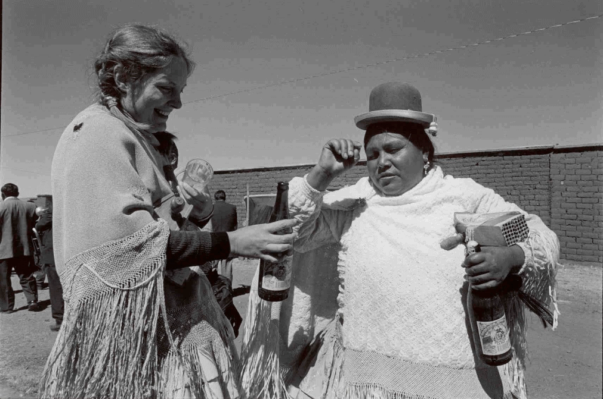
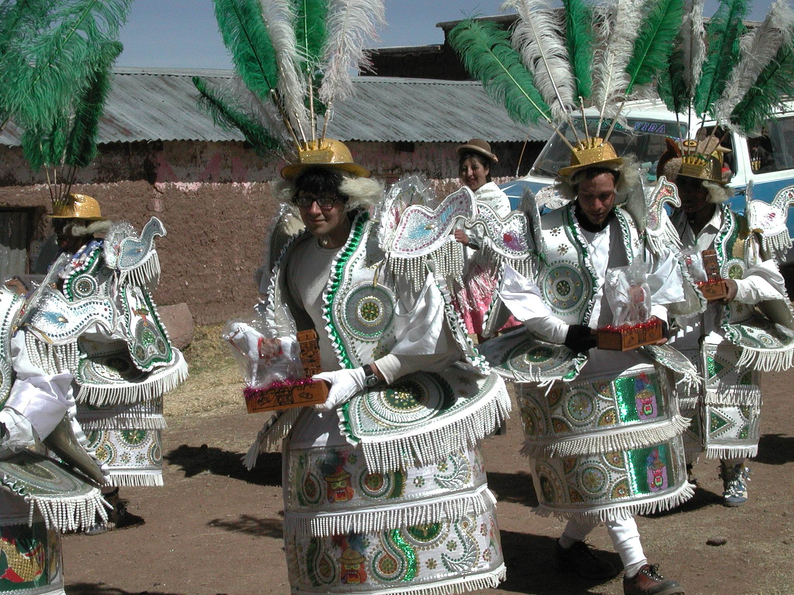
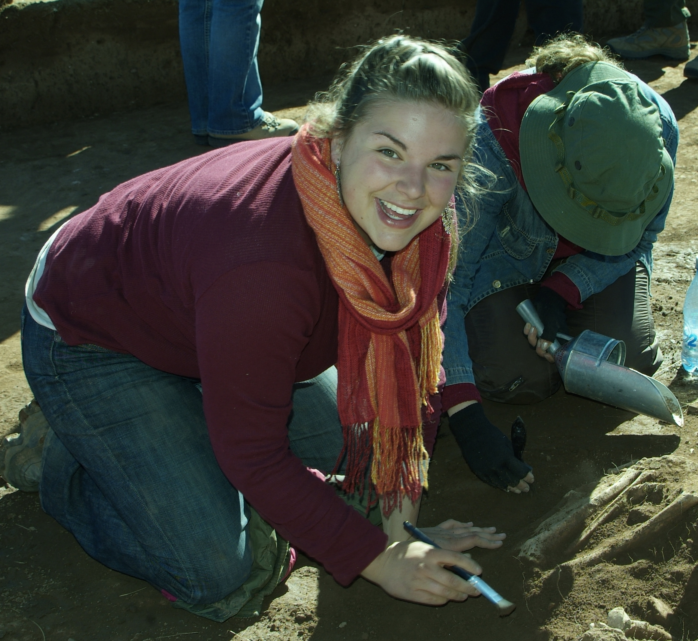

Professor Deborah Blom (on left) in Bolivia (Photo by Wolfgang Schuler).

Nate Clough (UVM Anthropology alum) dancing in the town fiesta in Bolivia.

Shannon Wilson, Anthropology major, doing field work in Bolivia.
James Allen, TA to Professor Deborah Blom, teaching osteology in the Anthropology lab.

James Allen, TA to Professor Deborah Blom, teaching osteology in the Anthropology lab.